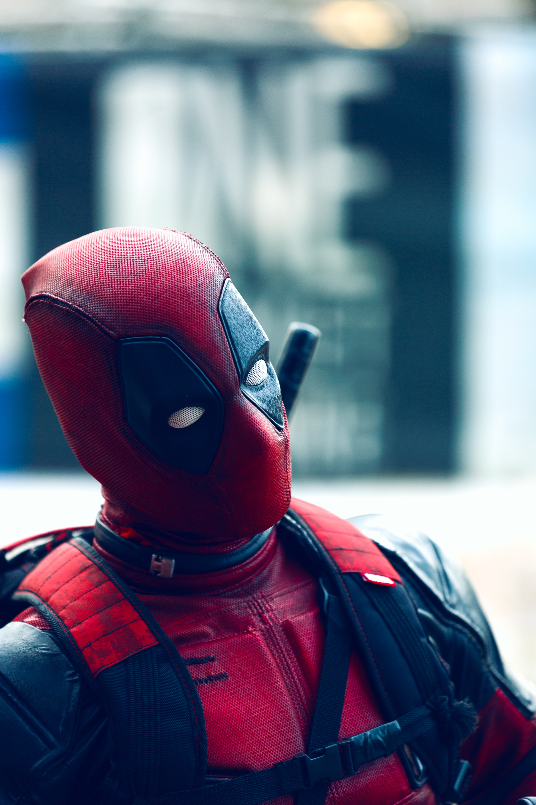
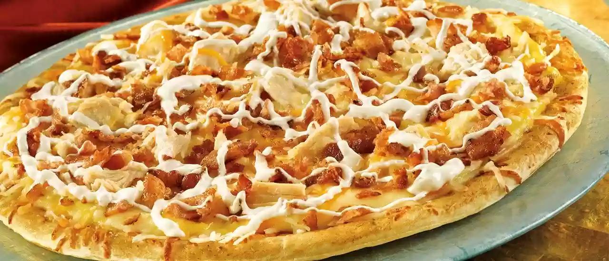

I live in Queens but I attend college at BMCC. I run into bad guys from time to time but I have a much more harder time dealing with Calculus then I do dealing with those idiots. My favorite food is pizza, most specifically with chicken bacon ranch as the topping with a side of garlic sauce.I love sports, can't really play them though because it would'nt be fair to the other students. It's funny that I'm from Queens yet I'm more of a Yankees fan than I am of the Mets. I do like the New York Giants and New York Knicks though.
| Picture | Description |
|---|---|
|  | That's my bestfriend Deadpool. He's pretty cool, very violent for some reason but super hilarious. He could be annoying at times but it's fun when we banter over dumb stuff. I really wish he would stop killing people, to be honest I;m not even sure he would be labled as a superhero" |
|  | Just look at that beauty. I swear chicken bacon ranch pizza is the greatest! Not that big a fan of having pineapples on pizza though. Don't get me wrong, I love pineapples but on a pizza, it really doesn't make sense. There are some unusual food combinations that work such as french fries dipped in a vanilla frosty but pineapples on pizza? No sir. |
|
One of my favorite things to do...watch sports! With the NY Knicks and Giants playing terrible lately, the Yankees are like the only NY team that has a shot at a championship. Don't tell anyone but I get in for free, sure I usually watch the games from the highest point in the stadium but at least I don't have to pay y'know? I miss Derek Jeter. |